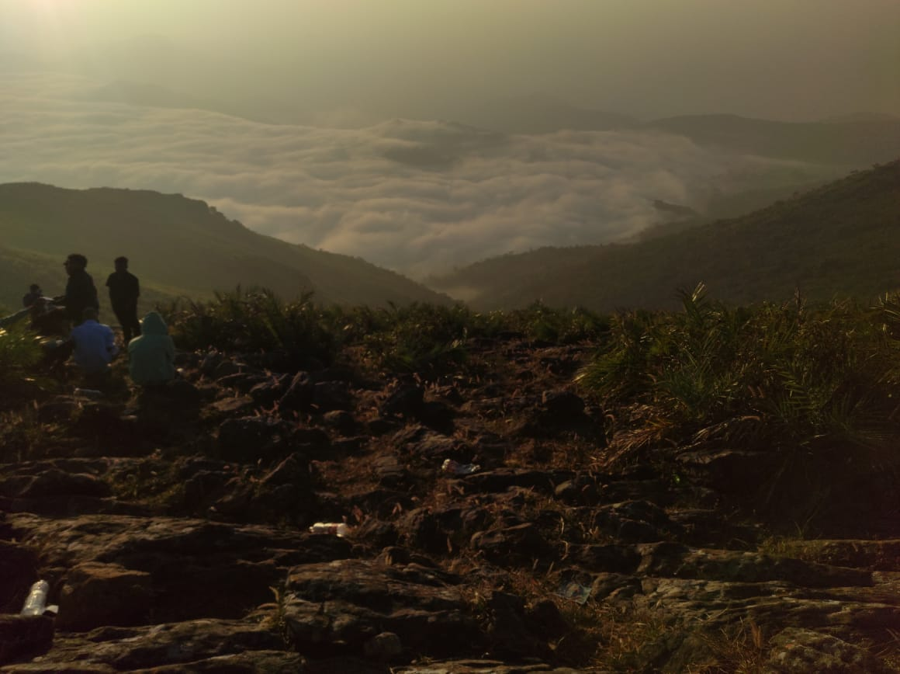
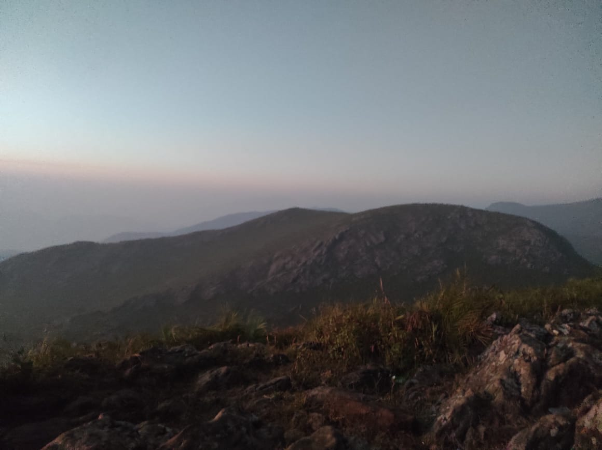
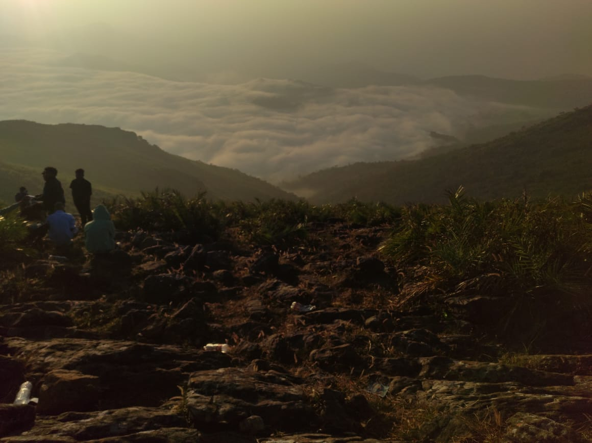
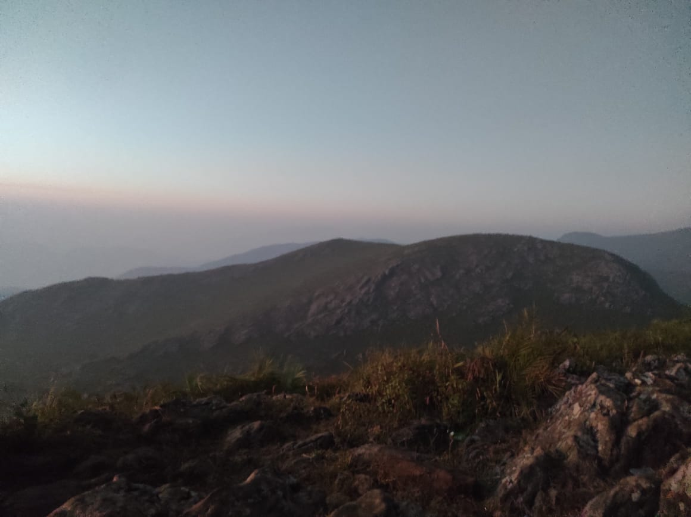
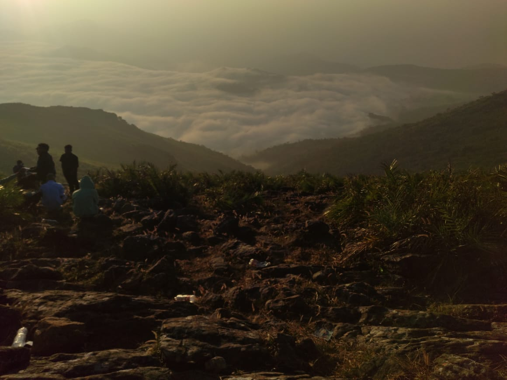
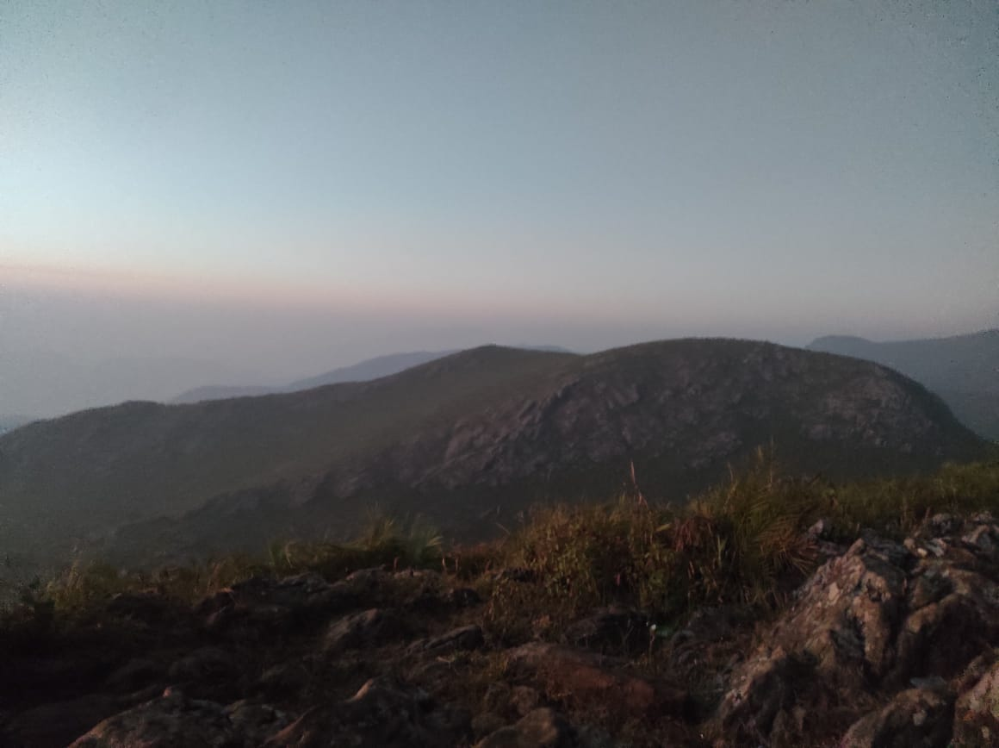
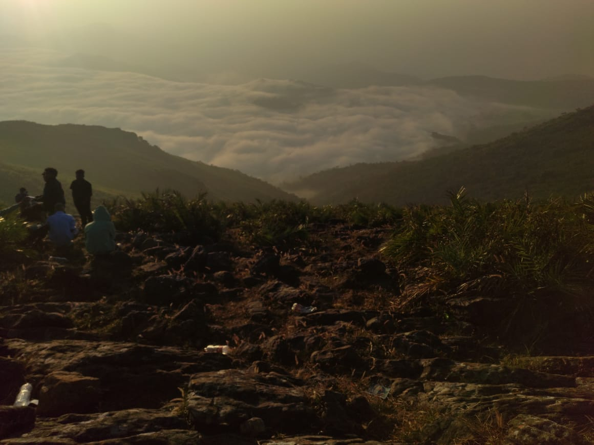
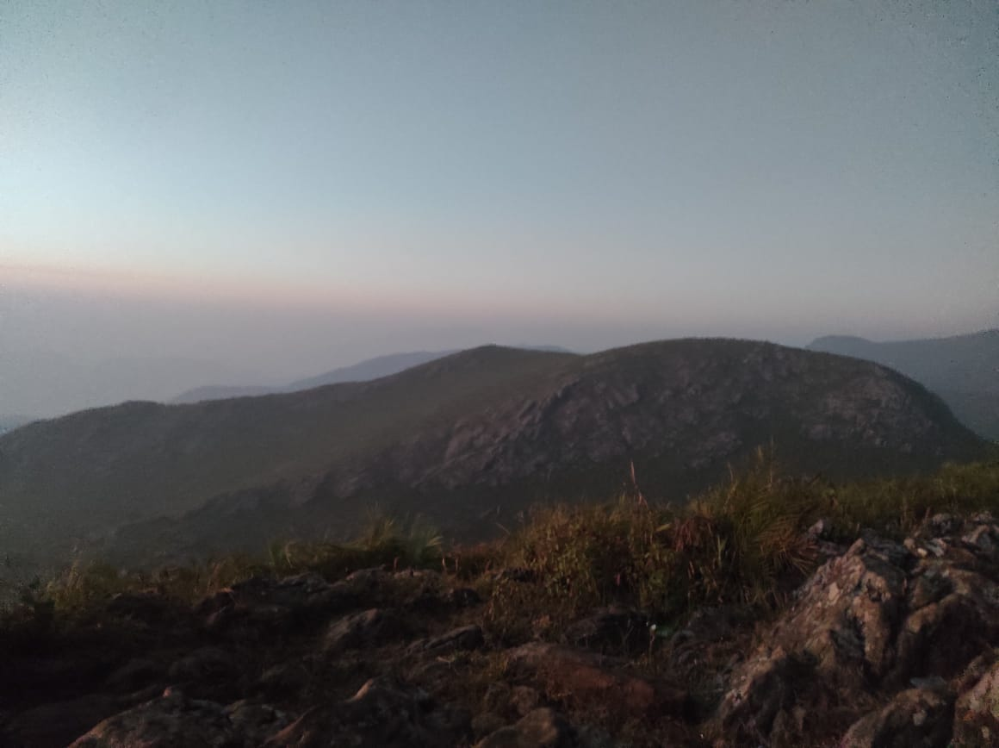

Nestled in the Eastern Ghats, Vanajangi is a hidden gem that offers breathtaking mountain views and an exhilarating trekking experience. This picturesque destination is a paradise for nature lovers and adventure enthusiasts.
Vanajangi presents some of the most scenic trekking routes in the Vizag region. The trails wind through lush green landscapes, offering panoramic views of the surrounding mountains and valleys. Trekkers can expect moderate to challenging routes that test their endurance while rewarding them with stunning vistas.
The mountain's viewpoints are truly breathtaking. As you ascend, you'll be treated to sweeping landscapes that stretch as far as the eye can see. The morning mists, rolling hills, and dense vegetation create a mesmerizing backdrop that makes every step of the trek worthwhile.
The approach to Vanajangi is an adventure in itself. The winding ghat road offers a thrilling journey with hairpin bends and spectacular views at every turn. Each curve reveals a new perspective of the magnificent Eastern Ghats, making the journey as memorable as the destination.
The ideal time to visit Vanajangi is between October and March when the weather is cool and pleasant. During these months, the landscapes are at their most vibrant, with clear skies and comfortable temperatures perfect for trekking and exploration.